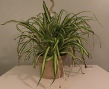
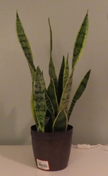
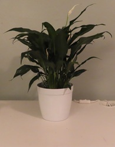
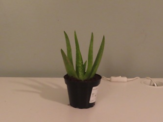

During the expermint I used five diferent plants.All the plants that were used during the expermint have very good filitring qualities.The system works by, the plant takes in carbon dioxide and other negitave pollutants, which are then broken down.Then the plant lets out clean CO2(oxegen)
The plants I used are listed below.
Spider plants helps clean indoor air. Studies have shown that spider plants are quite effective in cleaning indoor air by absorbing chemicals in homes or offices. Spider plants like bright light, near but not on a window.
A benifit of a Snake plant is that they remove indoor air pollutants. FUN FACT: "They perfect plants to attract money, prosperity, and good energy."
A peace lily is a flowering plant in the family Araceae, native to tropical regions Certain species of Spathiphyllum is the real name for a peace lily.
An Aloe vera is a succulent plant species. It is widely distributed, and is considered an invasive species in many regions. Aloe veras originate from the Arabian Peninsula, but also grows wild in tropical, and arid climates around the world.
